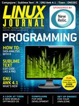

Shutdown Archive web server
Search:
Linux Journal
Issue #232/August 2013

Features
Using the R Advanced Statistical Package
by Mihalis Tsoukalos
A look at data analysis with R.
Sublime Text: One Editor to Rule Them All?
by Ken Kinder
The power of an IDE and the speed of a regular editor. We show you what the buzz is about.
GNU Awk 4.1: Teaching an Old Bird Some New Tricks, Part II
by Arnold Robbins
The gawk developers have not been idle. Come see what's new!
Indepth
Get More Juice out of Your Enterprise Code Base with Code Search
by Sushil Krishna Bajracharya
Gain access to the wealth of knowledge trapped inside your code base.
Chances for a Tizen Smartphone Entry
by Michael Schloh von Bennewitz
Tizen's developers intend it to power a variety of devices including phones, tablets, vehicles and televisions.
Columns
Reuven M. Lerner's At the Forge
Compojure
Dave Taylor's Work the Shell
Web Administration Scripts
Kyle Rankin's Hack and /
DNSSEC Part II: the Implementation
by Kyle Rankin
Shawn Powers' The Open-Source Classroom
Protect Your Ports with a Reverse Proxy
by Shawn Powers
Doc Searls' EOF
Dear Hotels: Quit Being A-holes
Departments
Current_Issue.tar.gz
Letters
upFRONT
New Products
Archive Index
Shutdown Archive web server
Search:
Copyright © 1994 - 2018
Linux Journal
. All rights reserved.